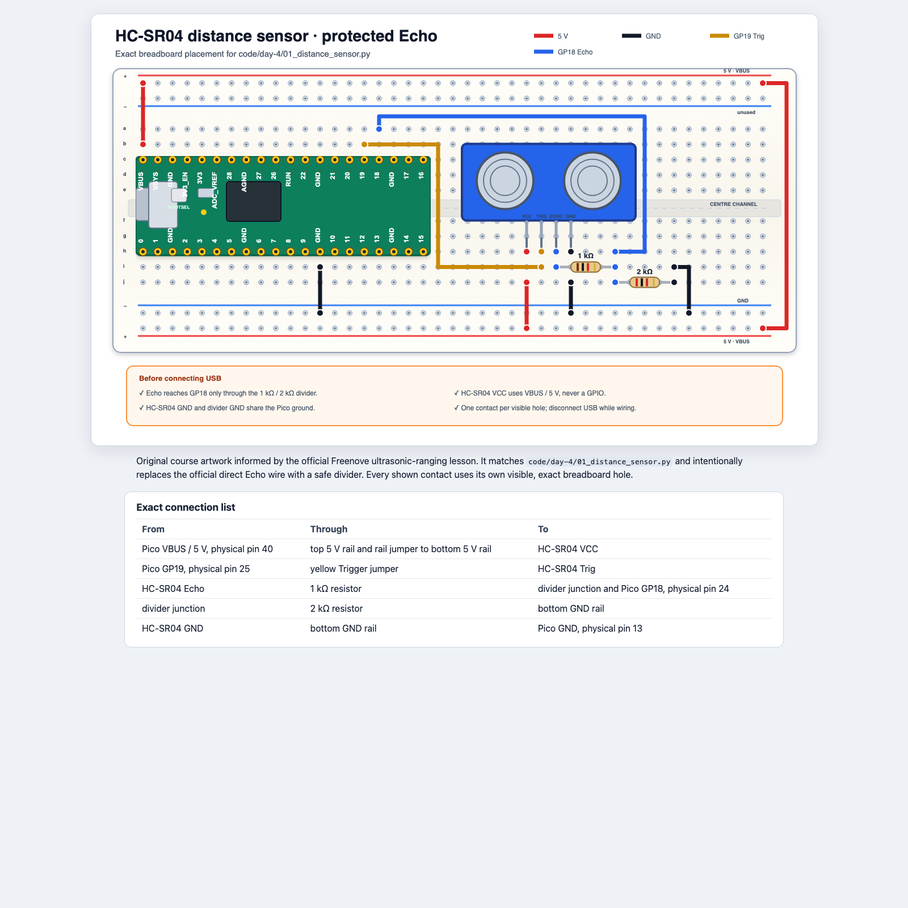
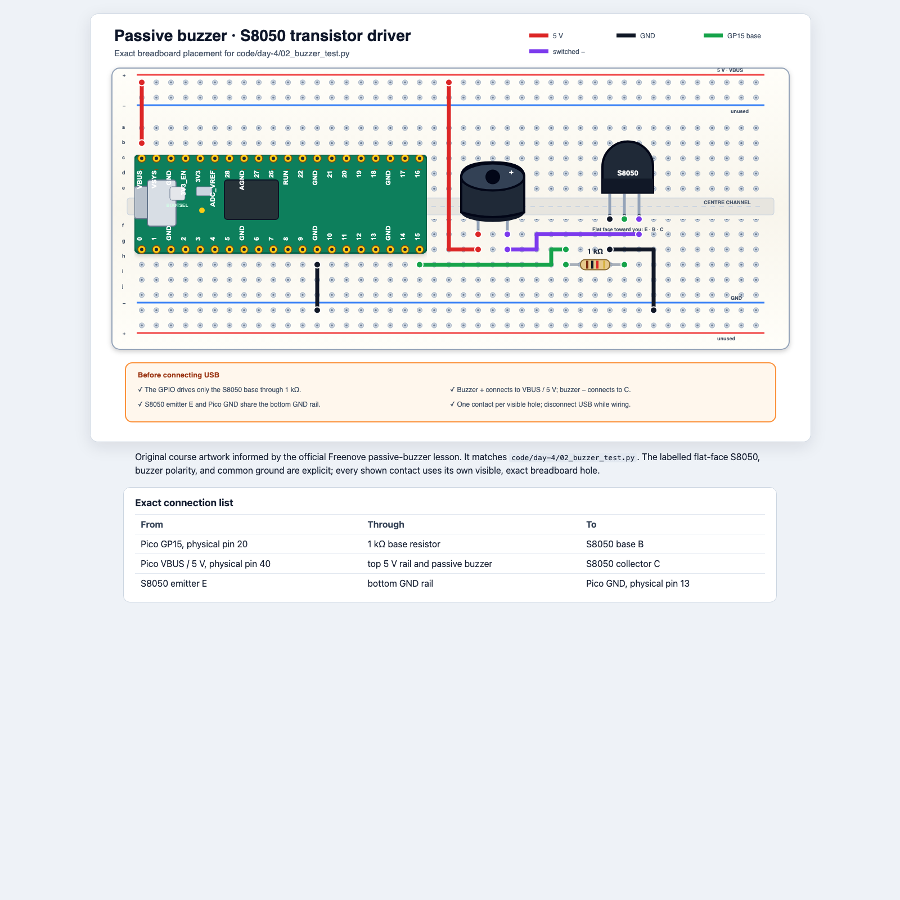
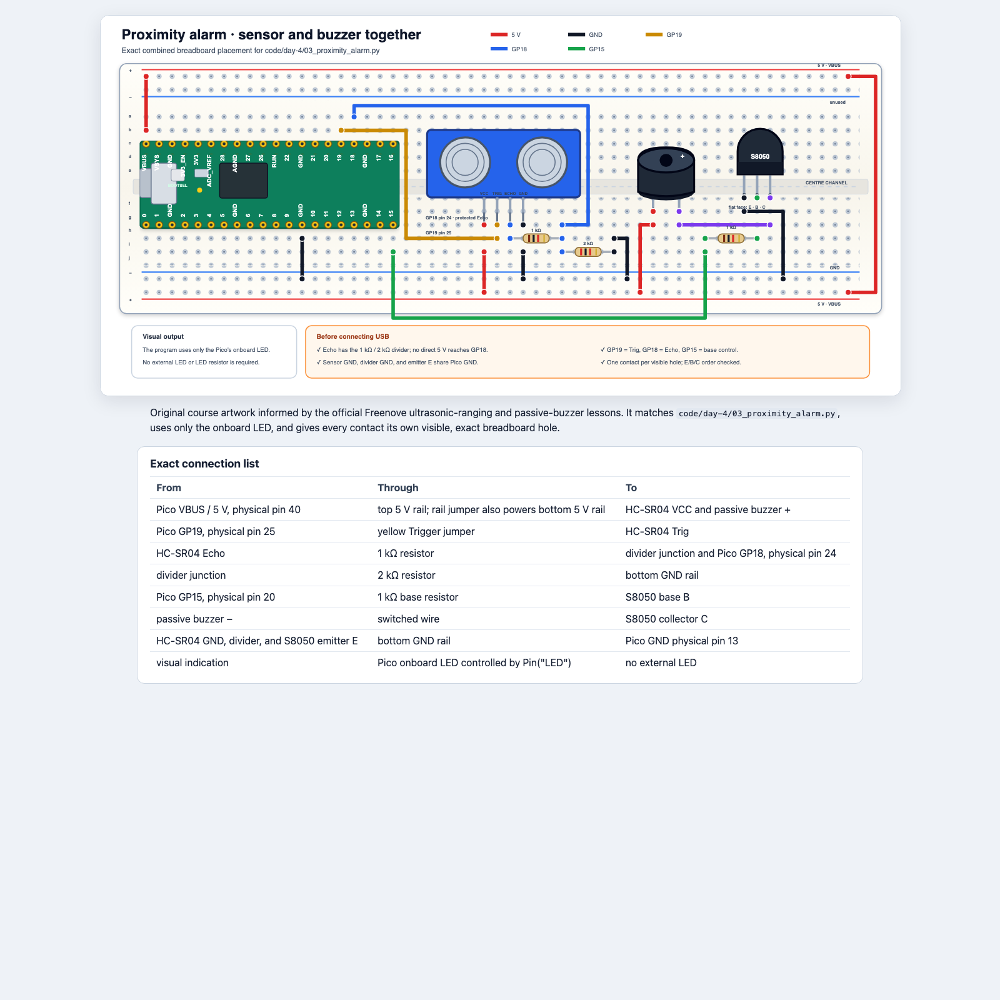

Python in the physical world · Day 4
Measure distance, handle missing data, and turn evidence into an alarm.
Safety gate: the sensor uses 5 V, but Pico GPIO accepts only 3.3 V.
Learning goals
Explain how pulse time becomes distance.
Use None when no useful echo returns.
Read settings from a dictionary.
Protect GP18 and drive the buzzer through a transistor.
Write exact distance rules and expected outputs.
Collect evidence before combining circuits.
Today’s route
Each circuit must work alone before it joins the proximity alarm.
Part 1 · Distance
The first task is electrical safety; only then do we measure.
Build while unplugged · Task 1

Why two Echo resistors?
Watch and discuss · Keep USB disconnected
Never connect HC-SR04 Echo directly to a Pico GPIO.
How measurement works
Watch and discuss · Trace the journey
distance_cm = pulse_us * 0.0343 / 2
Divide by 2 because the measured time includes the trip out and the trip back.
Test the sensor · Task 1
Test the circuit · Instructor checks, then connect USB
Take three readings at each position. Record how far each reading is from the ruler distance.
Then try a soft target and an angled target. Describe what changes; do not “fix” the code yet.
Missing data
None means “no usable measurement”Try in Thonny · Predict both paths
distance = measure_distance_cm()
if distance is None:
print("No echo")
else:
print(distance)
Using 0 for failure would falsely mean “the object is touching the sensor.”
Timeouts
Discuss · What if no echo ever returns?
pulse_us = time_pulse_us(echo, 1, ECHO_TIMEOUT_US)
if pulse_us < 0:
return None
The timeout lets the program report failure and continue instead of waiting forever.
Part 2 · Sound
The Pico controls the transistor; the transistor switches the buzzer.
Build while unplugged · Task 2

Why a transistor?
Watch and discuss · Point to each path on the diagram
GP15 → 1 kΩ resistor → transistor base B
VBUS → buzzer → collector C → emitter E → GND
Do not connect the buzzer directly to GP15.
Test the buzzer · Task 2
Test the circuit · Partner-check E/B/C, then connect USB
Three brief tones: 1200 Hz, 1600 Hz, and 2000 Hz.
Keep the buzzer away from ears. Visual-only participation is always acceptable.
Part 3 · Configuration
A state name can lead to all the settings for that state.
Key-value pairs
Try in Thonny · Use the Shell
zone = {"colour": "amber", "pause_ms": 600}
print(zone["colour"])
print(zone["pause_ms"])
"colour" is the label used to find a value.
"amber" is the setting stored under that key.
Update one setting
Try in Thonny · Predict the final dictionary
zone = {"colour": "amber", "pause_ms": 600}
zone["pause_ms"] = 400
print(zone)
The key remains "pause_ms"; its value changes from 600 to 400.
Several alarm states
Watch and discuss · Read from outside to inside
ZONE_CONFIG = {
"safe": {"beep_ms": 0, "pause_ms": 300},
"caution": {"beep_ms": 80, "pause_ms": 520},
"stop": {"beep_ms": 80, "pause_ms": 120},
}
pause = ZONE_CONFIG["caution"]["pause_ms"]
First choose "caution"; then read its "pause_ms" value: 520.
Part 4 · Combine
Reuse the two tested circuits, then give each distance a state.
Build while unplugged · Daily task

Layered build · Daily task
Build while unplugged · Instructor checks before USB
E/B/C.03_proximity_alarm.py.One job per function
Watch and discuss · Follow one distance through the program
distance = measure_distance_cm()
zone = classify_distance(distance)
alert_once(zone)
Returns a number or None.
Returns "safe", "caution", "stop", or "invalid".
Uses the state to control light and sound.
Write the rules first
On paper · Agree before changing code
| State | Distance rule | Light | Sound |
|---|---|---|---|
| safe | over 60 cm | steady | silent |
| caution | over 25 through 60 cm | slow blink | slow beep |
| stop | 25 cm or less | fast blink | fast beep |
| invalid | None | off | silent |
Boundary tests
On paper · Predict each result
safe
caution
stop
Noneinvalid
A requirement says what must happen. A test case gives one exact input and expected result.
Daily task
None through all three functions.Invalid input must never create a continuous alarm.
Exit ticket
Explain what the program should do when no echo returns, and why returning None is better than returning 0.
Teacher reference
Unit 3 return values and None; Unit 6 key-value lookup and update; Unit 8 scenarios, requirements, and specifications.
HC-SR04 timing and timeout, protected Echo input, transistor-driven buzzer, layered integration, and boundary tests.
Sources: TEALS Units 3, 6, and 8 lesson materials. Hardware tasks use the workshop's original course diagrams and linked Freenove attribution.